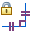

Maintain relationships
-
Choose Maintain Relationships

from the Home tab→Relate group or Sketching tab→Relate group.
Tip:
When Maintain Relationships is set, relationship handles are placed when you draw new elements using IntelliSketch, and when you use relationship commands.